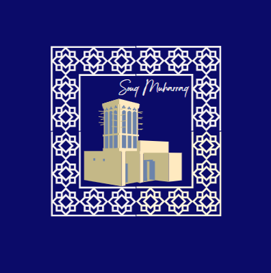

Souq muharraq is an old traditonal market in Bahrain.It contains local shops that sell local clothes like jalabiya and thobe also they sell arabian perfumes.Moreover there is many diffrent places that you can visit that intrdouce you to bahrain traditional houses and how they used to live.Therefore this site will help you to learn about it.
Market that sells spices,traditional clothes,dishes and local sweet that we call halwa.
Souq AlqaysariyaThe house of Fathallah that will be a distination for visitors
Nuzul AlsalamThe group of three amarat of the Fakhro family.
Amarat Yousif FakhroExplore More
Explore Moreits located in Muharraq.
You can buy ticket for 1BD that to visit these places except for souq alqaysariya its free.
This website will help you learn about souq muharraq and its past as well as the traditions of Bahrain.Moreover, you will get to know the places inside the souq.
Created by: Aysha A.Alnoaimi